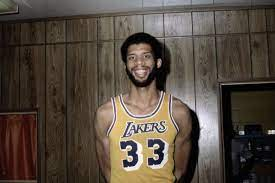
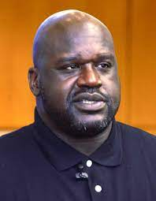

Algunos de los jugadores más reconocidos de la historia de la NBA son:
Bill Russell (1934). Es un exjugador de básquetbol estadounidense ganador de once anillos de la NBA con los Boston Celtics. Es considerado uno de los jugadores más importantes de la historia de la NBA y uno de los defensores más destacados.
Kareem Abdul-Jabbar (1947). Es un exjugador de básquetbol estadounidense y el máximo anotador de la historia de la NBA. Es uno de los jugadores con más partidos disputados en esta liga y fue seis veces campeón, con Los Angeles Lakers (5) y los Milwaukee Bucks (1).

Larry Bird (1956). Es un exjugador de básquetbol estadounidense y es considerado uno de los aleros más destacados en la historia de este deporte. Fue campeón de la NBA con los Boston Celtics en tres ocasiones y, además, ganó la medalla olímpica con la selección estadounidense en 1992.
Earvin “Magic” Johnson (1959). Es un exjugador de básquetbol que obtuvo cinco anillos de la NBA con Los Angeles Lakers. Fue parte del llamado “dream team” que ganó la medalla dorada en las olimpiadas de Barcelona 1992.
Michael Jordan (1963). Es un exjugador de básquetbol estadounidense y uno de los más destacados de la historia de este deporte. Ganó seis anillos con los Chicago Bulls y fue máximo anotador de la NBA en diez oportunidades.
Karl Malone (1963). Es un exjugador de básquetbol estadounidense y el segundo jugador con más anotaciones en la historia de la NBA. Fue un jugador histórico de los Utah Jazz.
Shaquille O`Neal (1972). Es un exjugador de básquetbol estadounidense, ganador de cuatro campeonatos de la NBA, con Los Angeles Lakers (3) y con Miami Heat (1). Se desempeñó como pívot y es considerado uno de los jugadores más importantes de la historia de la NBA.

Kobe Bryant (1978-2020). Fue un jugador de básquetbol estadounidense que se destacó en Los Angeles Lakers, equipo con el que ganó cinco anillos de la NBA. Es uno de los jugadores con mayor número de anotaciones en la historia de la NBA y fue ganador de dos medallas olímpicas con la selección nacional estadounidense.
LeBron James (1984). Es un jugador de básquetbol estadounidense que se desempeña como escolta en Los Angeles Lakers. Ganó cuatro campeonatos de la NBA, con Miami Heat (2), Los Angeles Lakers (1) y Cleveland Cavaliers (1), y es uno de los máximos anotadores en la historia de esta liga.